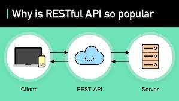

What is a REST API? A REST API (Representational State Transfer Application Programming Interface) is a set of rules that allows different software systems to communicate over the internet using HTTP (Hypertext Transfer Protocol). It is used to access and manipulate resources (data) on a server, where each resource is identified by a URL. 🎯 Key Concepts in REST API Term Meaning Resource The data you want to access or modify (users, products, posts, etc.) Endpoint A specific URL that identifies a resource HTTP Methods Actions to perform on resources (GET, POST, PUT, DELETE) JSON The common data format used to send and receive data Stateless Every request must have all required information — server does not remember previous requests
Method Purpose Example GET Retrieve data Get list of users POST Create new data Create a new user PUT Update existing data (replace) Update user info PATCH Partially update data Update user email only DELETE Remove data Delete a user 📍 Example Endpoints (Assume Base URL: https://api.example.com ) 1️⃣ GET — Read Data GET /users GET /users/4
Client (Browser, Mobile, App)
|
| HTTP Request (GET, POST, PUT, DELETE)
v
REST API Server
|
| Database Query
v
Database

Go to Day 3